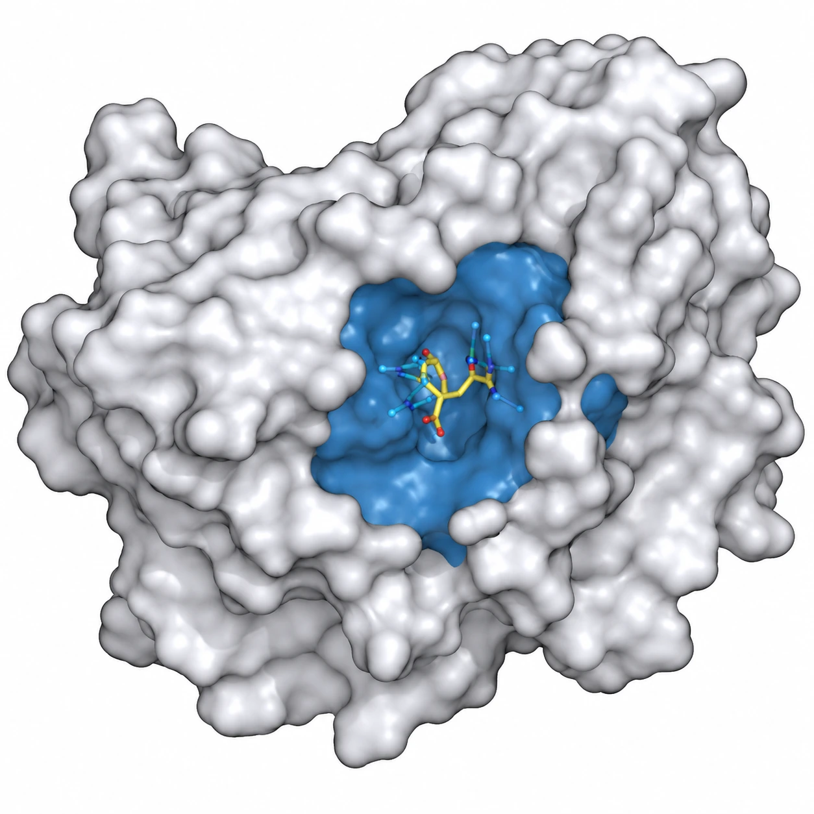

Protein–Membrane Workspace
A scientific application connecting molecular-system preparation, construction, minimization, and inspection.
Protein–Membrane Workspace on GitHubACADD — Autonomous Computational Aided Drug Discovery
An autonomous system designed to learn from molecular evidence, choose useful investigations, and adapt its search within a researcher’s objectives and computational budget.
Start with your compounds and existing results, or explore permitted chemical libraries. ACADD uses available evidence and relationships between compounds to identify what is worth investigating next. New results can change the direction of the search.

The aim is to help research teams explore more scientific possibilities and direct costly calculations and experiments toward the decisions they could change.
Core mechanisms implemented. Controlled verification and campaign integration are in progress. Scientific performance remains under evaluation.
A molecular change can improve one property and worsen another. A promising binding prediction may leave biological response or solubility unresolved. A useful finding in one chemical series may apply only under particular conditions.
Researchers must decide which earlier evidence applies, what remains uncertain, and whether another investigation would change the direction of the work. They may refine a familiar series, examine a different scaffold, or stop spending on an unproductive route.
Change one chemical group and test the analogue.
Which uncertainty should we investigate first?
Suppose a team changes one chemical group and tests the resulting analogue. Assay activity improves, but solubility falls. The next design depends on whether the activity gain can be retained while improving solubility.
ACADD is designed to apply that reasoning across many compounds and investigations. What should we learn next to make progress toward the discovery objective at a justified cost?
Start with a discovery objective and the evidence available. Each investigation can improve both the assessment of particular compounds and the knowledge used to choose subsequent work.
Relate structures, observations and uncertainty.
Molecular changes, comparisons and evidence gaps.
Compare consequences, dependencies and total cost.
Acquire results and retain their scientific context.
New evidence changes what we investigate next.
Specify the target, required molecular properties, evidence needed to support a candidate, permitted chemistry and methods, and computational budget. An objective can require several properties on the same compound.
Use the team’s compounds and their experimental or computational results, including unfavorable and uncertain findings. If evidence is sparse, use permitted library structures and select informative initial investigations. The work can begin with computational evidence when appropriate.
Analyze molecular changes, spatial features, shape, electrostatics, and available target interactions. Link these relationships to relevant observations while preserving their source, conditions, and uncertainty. Reuse earlier analysis and keep missing measurements open.
Retrieve candidates, apply supported molecular transformations, compare related compounds, or select a method to address an evidence gap. Include structurally diverse candidates and comparisons that could challenge a useful relationship.
Compare what investigations could reveal, how those findings could affect later choices, and what the work would cost. Reuse completed work, account for pending results and shared preparation, and run selected calculations when dependencies and resources permit.
Incorporate results, update the affected predictions and relationships, and reconsider the next investigations. A result can strengthen a promising direction, reveal a limitation, or redirect the search. Work whose scientific basis still holds can continue.
ACADD combines several ways of comparing molecular structures. Each can suggest a different question and help establish whether a finding could apply to other compounds.
| Molecular relationship | Scientific question |
|---|---|
| Local chemical transformations | Which replacements appear useful, and in which molecular environments? |
| Pharmacophores | Can different scaffolds present a relevant arrangement of chemical features? |
| Shape and electrostatics | Do spatial and charge-related similarities support a useful comparison? |
| Target interactions | What do available poses reveal about how compounds could contact the target? |
Structural similarity can motivate a comparison. Evidence about a specific endpoint comes from observations such as a docking score, a calculated binding free energy, or an experimental measurement. Each has its own scope and limitations.
Suppose the same substitution is associated with favorable results in one chemical environment and unfavorable results in another. ACADD can retain that distinction, propose related molecules, and identify a comparison that could clarify where the finding applies.
A comparison can require several calculations. Its results inform an estimate of the effect and uncertainty in a specified context. Where the evidence supports transfer, the finding can guide predictions about further compounds. Other cases remain open.
The substitution is known. Its effect in each setting is still an open question.
Favorable effect observed
Related predictions shift in a favorable direction.
Unfavorable effect observed
Related predictions shift in an unfavorable direction.
A different scaffold may support a comparison where the relevant local environment and endpoint evidence apply. Transfer remains conditional.
A different or unstudied environment remains unresolved when the available evidence cannot support transfer.
A good candidate can reveal a useful relationship. A useful relationship can suggest a better next candidate.
An expensive investigation may prevent greater expenditure later. A cheap calculation may add little to what is already known.
ACADD considers what each investigation could reveal, how its results could revise predictions and relationships, and what follow-up work those changes could justify. It also compares groups of investigations for complementary evidence, overlap, and pending work.
A proposed analogue has promising binding evidence, but solubility could determine whether it advances. In this example, a lower-cost property predictor applies to the compound and conditions. Its estimate could resolve the uncertainty that controls the decision, while more binding refinement would leave that question open.
Promising binding evidence · solubility unresolved
The estimate supports prioritization. Check the remaining evidence requirements before advancing the analogue.
Explore a permitted change that might recover solubility while retaining the promising binding idea.
Retain the uncertainty. Compare a more informative investigation with other worthwhile work.
Its inputs and scientific basis are available, and it fits the remaining resources.
Its next choice follows its own evidence and dependencies.
Rows show candidates from chemical series A and B. Columns show the same possible calculations in both views.
A batch of calculations is chosen in advance.
| Candidate | |||
|---|---|---|---|
| Candidate A1 | Planned upfront | Planned upfront | Planned upfront |
| Candidate A2 | Planned upfront | Planned upfront | Planned upfront |
| Candidate B1 | Planned upfront | Planned upfront | Planned upfront |
| Candidate B2 | Planned upfront | Planned upfront | Planned upfront |
Choose work using evidence, dependencies and available resources.
| Candidate | |||
|---|---|---|---|
| Candidate A1 | Selected now | Wait for a result | Other possible work |
| Candidate A2 | Reuse existing evidence | Other possible work | Other possible work |
| Candidate B1 | Other possible work | Selected now | Other possible work |
| Candidate B2 | Reuse existing evidence | Other possible work | Reuse existing evidence |
The selected binding calculation for B1 can proceed independently.
Some investigations are worth running together. Others should wait because an earlier result could change whether they are still useful. Work on another series can proceed while this solubility question is resolved.
The selection objective is to reduce the expected total cost of reaching the specified outcome within scientific and resource constraints. That includes preparation, missing inputs, evaluation, analysis, and the consequences of failure. Shared preparation and pending results can change the cost of an additional step.
If the evidence still falls short of the objective, further exploration can continue within the researcher’s permitted scope.
Researchers can follow the evidence for a compound, see which findings may carry over, and understand why the system is proposing its next investigation.
Local refinement, searches for different scaffolds, and tests of uncertain relationships can inform one another. For research organizations, the intended benefits are less hands-on coordination and repeated work, more deliberate use of expensive calculations and experiments, and a clearer record of which decisions the evidence supports.
The architecture is designed to keep track of thousands of potential investigations, progressively examine them, and select a subset within the available budget. Independent work can run concurrently where the methods, resources, and value of waiting allow it.
Researchers retain control of objectives, permitted work, resources, and stopping conditions. Measured studies will establish throughput, improvements in discovery, and any cost savings.
Compare scientific relevance, available evidence and total cost.
Each result informs the decisions that depend on it.
Scientific Knowledge combines retained observations, structural relationships, and probabilistic predictions. Investigation Policy uses these to construct alternatives, estimate what acquiring evidence could change, and choose the next work. Execution supplies the actual results and their resource costs.
The predictive framework represents uncertainty and dependence between supported molecular queries. An observation can therefore inform related predictions to the extent the evidence supports. Exploration, local refinement, and method selection use this shared account of how results could change future choices.
The available methods depend on the question and the capabilities configured for the study.
Each contributes a different kind of evidence. The initial mechanistic design covers a supported competitive enzyme inhibition relation and a conditional concentration–response relation. Each requires the relevant biological assumptions, parameters, and conditions. Broader biological mechanisms require their own supported models.
Resolving uncertainty is useful when it could change a decision. The system distinguishes estimates with uncertainty from questions for which it lacks a supported model. A missing scientific basis calls for appropriate evidence or a supported model.
Predictions retain their source, conditions, and limitations so that later decisions can use them appropriately.
The researcher sets the objective, evidence requirements, permitted chemistry and methods, spending authority, and stopping conditions. Decisions about synthesis, experimental validation, and biological claims remain tied to the evidence and responsibilities of the research program.
Development and evidence
Core scientific and operational mechanisms have been implemented and exercised in controlled tests.
Current work focuses on the assembled discovery loop. The system chooses an investigation from available evidence, executes it, incorporates its results, and uses the updated knowledge in a subsequent decision.
The first study is designed to examine this behavior in a synthetic chemical environment built on real molecular structures. Hidden response rules generate the endpoints. The system learns from observations it acquires and can request evaluations of molecules beyond the starting set.
The study examines how the system works within the resources it has available. It asks whether the system can:
The first milestone is a bounded demonstration of productive scientific navigation. Later studies can assess broader reliability, quantitative efficiency, and applicability to real research problems. Experimental biological efficacy requires separate evidence.
The evaluation account will include study conditions, available methods and resources, actual investigations, expected and observed results, decisions that changed, candidate progress, costs, and limitations.

I develop scientific software and numerical systems. ACADD brings that work into a discovery process that connects molecular evidence, predictive reasoning, and the choice of new investigations.
A scientific application connecting molecular-system preparation, construction, minimization, and inspection.
Protein–Membrane Workspace on GitHub
An interactive numerical application for exploring particle dynamics, trajectories, and physical quantities.
Particle Simulator on GitHubI welcome conversations with medicinal and computational chemists about the questions that consume research time, the evidence needed to act on a prediction, and useful settings for evaluation.
I also welcome conversations with potential partners and investors interested in developing and validating the system.